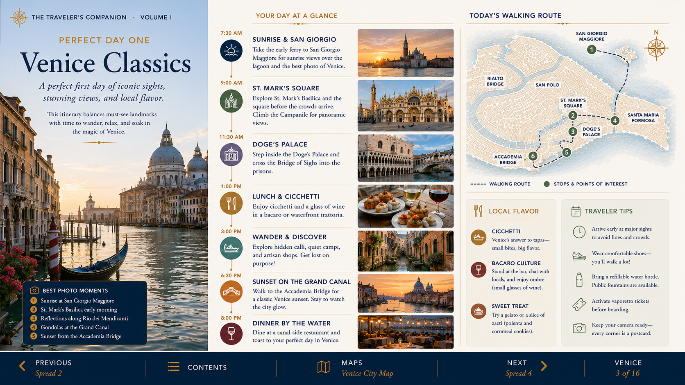
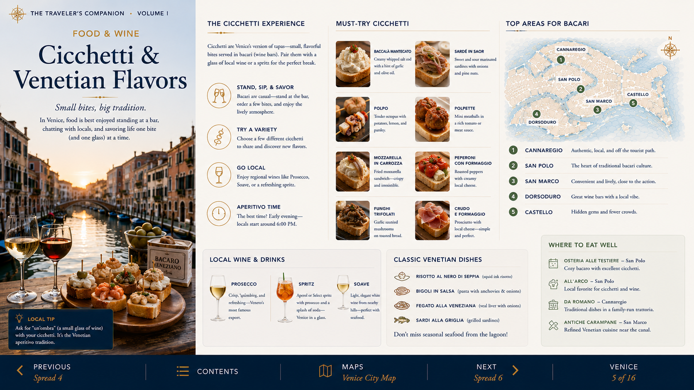
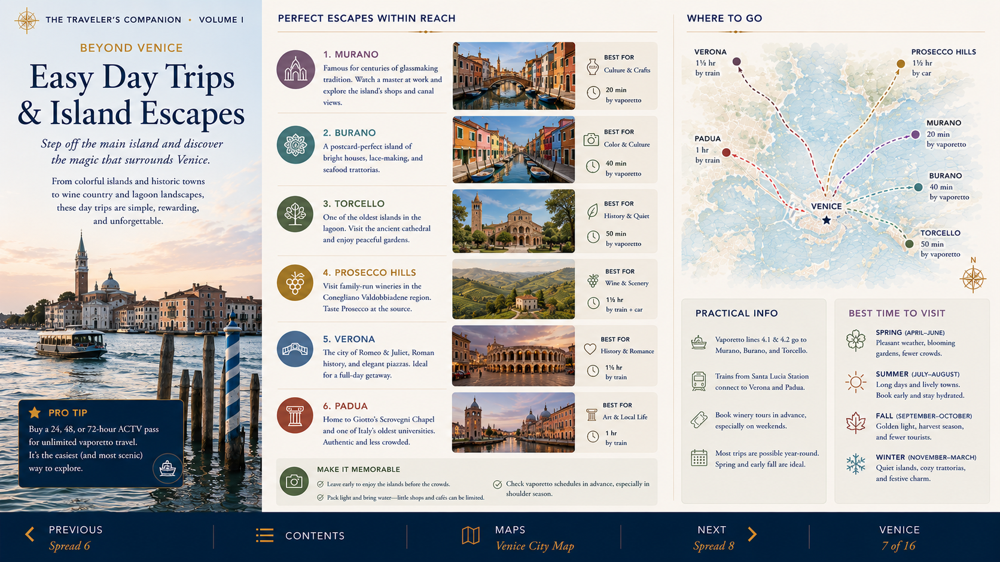
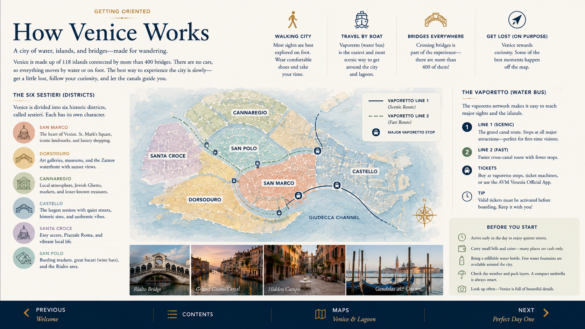
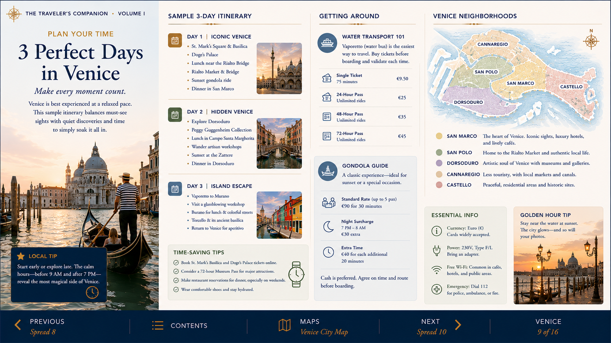
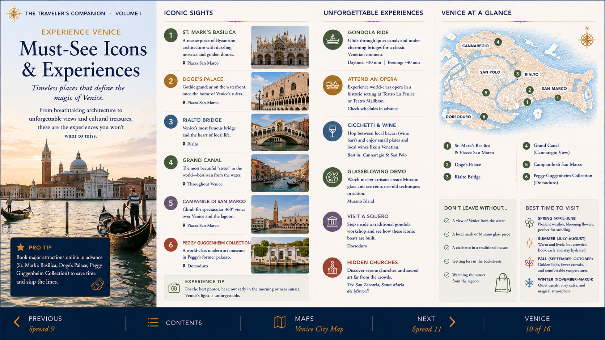
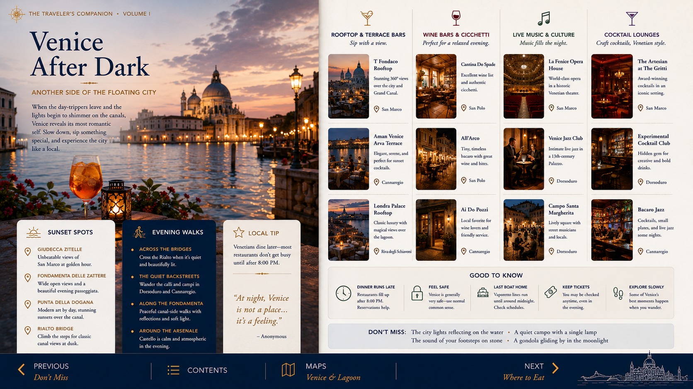
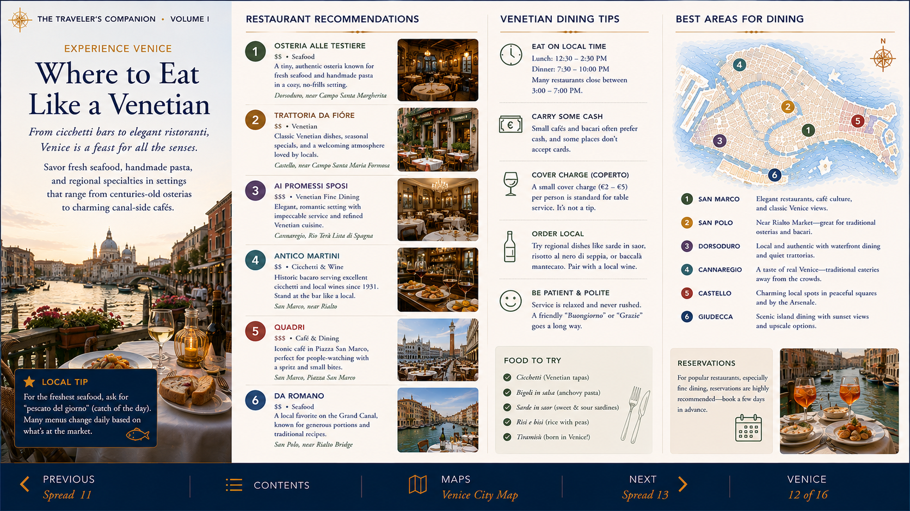
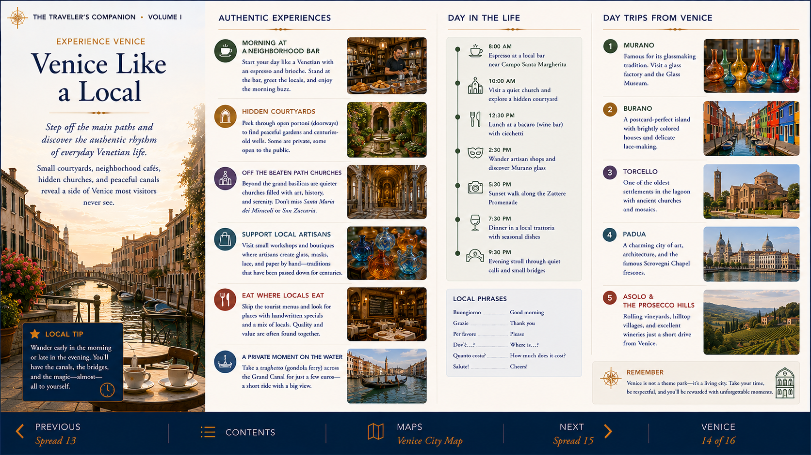
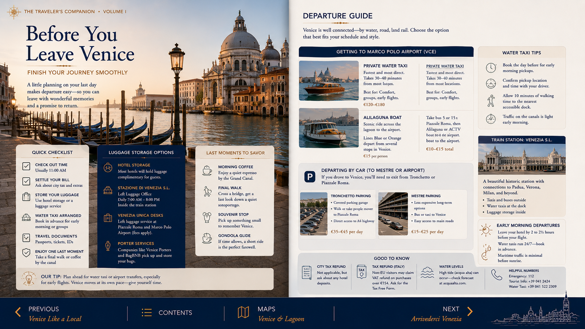

Classic Venice
St. Mark's, the Doge's Palace, Rialto and the Grand Canal in one focused section.
The Floating City—kept concise, visual and easy to use while traveling.

The strongest original material is retained, but the web guide separates it into faster, clearer sections for use during the trip.

St. Mark's, the Doge's Palace, Rialto and the Grand Canal in one focused section.

A practical visual introduction to bacari, aperitivo and local dishes.

These are shown at their natural proportions, so none of the titles or photographs are cropped by the web layout.








The original chapter spreads are now displayed in framed, uncropped windows rather than being used as oversized background images. This prevents headings such as “VENICE” from being cut off and makes the layout more stable on Mac and iPad screens.